走进 AI 生成的世界，还能开口跟里面的人说话
Google DeepMind 在 10 月 27 日发布了世界模型 Genie 4。给它一段文字或一张图片，它能实时生成一个可以走进去的立体世界：你按键盘走动，天气、镜头、人物都能在运行中改——打字…
新模型发布、降价、开源：模型圈速览，选型不踩坑
Google DeepMind 在 10 月 27 日发布了世界模型 Genie 4。给它一段文字或一张图片，它能实时生成一个可以走进去的立体世界：你按键盘走动，天气、镜头、人物都能在运行中改——打字…
Google DeepMind 在 10 月 27 日发布了世界模型 Genie 4。给它一段文字或一张图片，它能实时生成一个可以走进去的立体世界：你按键盘走动，天气、镜头、人物都能在运行中改——打字说一声“换成雨天”，场景就跟着变，不用重新生成。跟上一代最大的区别在声音：Genie 4 第一次原生生成音频，环境音、音乐、人物对话和画面同步出来，世界里的人能开口跟你说话。
官方给出的几个数字要分清已确认和待验证。场景连贯时长约 2 分钟，是上一代 1 分钟的两倍，背后用 Gemini 3.8 Flash 做引导。发布形态目前是研究预览，只给受信任的测试者，Google AI Ultra 订阅用户走 Project Genie 排队，Gemini API 和 Google AI Studio 的早期合作伙伴随后接入，价格还没有公布。DeepMind 自己也坦承了短板：复杂物理互动、实时音频准确度、画面里可读文字、空间准确性和长期一致性都还在研究中，场景跑久了细节会漂移。
官方建议的用法集中在三类人：影视人拿它当排练模式，一场戏连排几个版本；游戏开发者先在生成世界里验证玩法，再写引擎代码；机器人团队先让 Agent 在想象世界里练，再上真机。所有 Genie 4 生成的视频和音频都会带 SynthID 水印。
普通人怎么用：现在先去 Project Genie 排队等开放，别信任何收费卖“Genie 4 内测资格”的帖子，价格都没公布，卖资格的只可能是骗局。等开放后，先用一张老照片生成一个可走动的场景试手感，再谈做不做正经项目。
英伟达在 10 月 28 日发布了 Nemotron 3.5 Transcribe，一个免费开源权重的语音转文字模型。按官方说法，它能转录 40 种语言的音频，31 种语言可以和英语互译，单段录音最长…
英伟达在 10 月 28 日发布了 Nemotron 3.5 Transcribe，一个免费开源权重的语音转文字模型。按官方说法，它能转录 40 种语言的音频，31 种语言可以和英语互译，单段录音最长支持 1 小时，还能区分最多 8 位说话人。模型参数 300 亿，官方称一块芯片就能跑，从 Jetson AGX Thor 机器人控制器、DGX Spark 到 Blackwell 数据中心芯片都在覆盖范围里。
这套发布瞄准的场景很具体：企业会议记录和医疗转录。英伟达同时更新了开源语音数据集 Granary 第二版，开发者可以用 NeMo 工具给模型定制行业术语，让它在特定语言里认准本行黑话。官方称它在 Hugging Face 的 Open ASR 排行榜上跑赢对手，这句话是厂商说法，还没有独立复核，别直接当成定论。
还有一个使用边界要先说清：这个模型处理的是录好的音频，不是直播流。开会时实时字幕、直播同传这类需求，它目前不覆盖，选型前别搞错。
普通人怎么用：如果你经常要整理会议录音、采访录音，可以先找一段 10 分钟的录音试转一轮，重点验三处：说话人分得准不准、专业词错得多不多、长句断句顺不顺。三处都过关，再把它接进自己的会议记录流程；做医疗、法律这类严肃转录，成稿仍需人工逐句核对，AI 转录不能直接当正式记录交出去。
Google 在 10 月 28 日发布了 Gemini 4 Carbon，官方称这是公司迄今最强的模型，主攻网络安全和长程任务。两周前刚发布的 Gemini 4 Argon，这次被 Carbon 接…
Google 在 10 月 28 日发布了 Gemini 4 Carbon，官方称这是公司迄今最强的模型，主攻网络安全和长程任务。两周前刚发布的 Gemini 4 Argon，这次被 Carbon 接棒。官方公布的成绩单里有三组硬数字：找漏洞的 SEC-bench Pro 拿到 88.2%，打补丁的 CWE-bench 拿到 71.0%，实战利用的 ExploitGym 拿到 54.8%，同时在 Artificial Analysis 智能指数 v5.0 上以 59 分排到第一。官方还称，Carbon 生成安全代码的成功率比 Argon 高出一倍以上，这些都是 Google 自己的内部测试结果，还没有第三方复核。
发布方式比成绩更值得留意。Google 这次不搞全面开放，而是分阶段放行：本周先给一部分网络安全人员，通过 Fairwind 计划逐步扩大到受信任的合作伙伴，开发者、企业和普通消费者要等护栏调好后才开放，具体日期没有公布。定价倒是先公布了：入门价每百万输入 token 2 美元、输出 10 美元，和 Argon 入门价一致，入门期过后涨到 4 美元和 20 美元。
这个顺序本身就是信号：最强的模型先去防攻击、找漏洞，而不是先上聊天产品。安全能力眼下是各家实验室正面较量的战场，普通用户反而不用急着追新。
普通人怎么用：如果你是开发者，先别停下手里的活等 Carbon，用 Argon 或现有模型把项目往前推，等 API 开放消息来了再评估要不要切。凡是现在就收费卖“Carbon 内测账号”的，一律按骗局处理——官方渠道还没轮到普通用户。
Anthropic 在 10 月 26 日向美国证券交易委员会递交了上市申请，计划在纳斯达克挂牌，股票代码定为 ANT。招股书没有公布发行价和发行股数，路透社等媒体报道的估值目标在 1.5 万亿到 2…
Anthropic 在 10 月 26 日向美国证券交易委员会递交了上市申请，计划在纳斯达克挂牌，股票代码定为 ANT。招股书没有公布发行价和发行股数，路透社等媒体报道的估值目标在 1.5 万亿到 2 万亿美元之间，这个数字还没有最终定下来，看报道时请分清已确认和传闻。
招股书里最硬的一组数字是收入：2026 年上半年收入 163 亿美元，去年同期是 12 亿美元；第二季度单季收入 116 亿美元，还第一次实现了 9.74 亿美元的季度经营利润。同一份文件也写了 807 亿美元的半年净亏损，其中大部分是非现金会计计提，不是现金亏掉了这么多，读财报请把这两项分开看。
普通人怎么用这条消息：选 AI 工具时，别只看模型跑分。Anthropic 能走到上市这一步，靠的是企业客户真金白银付费。你在公司里推 AI 工具，不妨学招股书的算法：先算它每月帮团队省了多少工时、替掉了哪些外包，再决定续不续费。
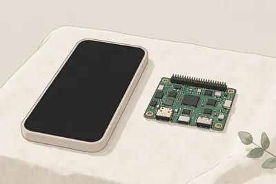
Liquid AI 在 10 月 27 日发布了 LFM3 系列，一共 6 个开源模型，参数都在 20 亿级别，共用同一个底座。6 个分工不同：纯文字版、图文视频版、音频版、全模态版，还有两个只给校准…
Liquid AI 在 10 月 27 日发布了 LFM3 系列，一共 6 个开源模型，参数都在 20 亿级别，共用同一个底座。6 个分工不同：纯文字版、图文视频版、音频版、全模态版，还有两个只给校准答案、不自由发挥的决策版。
这套模型冲着端侧去的：文字版用 4 位精度压缩后大约占 1GB，官方称在三星、OnePlus 手机、树莓派 5、苹果和 AMD 笔记本上都调过。普通人不用关心架构名词，记住一点就够：模型够小，才能装进自己的设备里跑，不用事事联网。
普通人怎么用：手头有旧手机、树莓派或者配置一般的笔记本，可以先在 Hugging Face 上找 LFM3 的开源权重和 Playground 试效果。想做离线翻译、本地整理文件这类小工具，从 20 亿级别的小模型起步，成本和门槛都比追大模型低得多。

OpenAI 在 10 月 26 日推出 GPT-6.1 Terra，接替 GPT-5.6 Terra，主打日常办公：填浏览器表单、进表格干活、读技术图纸、剪视频。模型能看懂屏幕内容，再跨应用动手做事…
OpenAI 在 10 月 26 日推出 GPT-6.1 Terra，接替 GPT-5.6 Terra，主打日常办公：填浏览器表单、进表格干活、读技术图纸、剪视频。模型能看懂屏幕内容，再跨应用动手做事。
官方数字先记两组。在 Agents' Last Exam 这项测 AI 用软件干专业活的考试里，中等推理力度下，Terra 比前代高 15 个百分点，单任务成本约三分之一。公司说法是，Terra 的表现追平 GPT-6 Astra，token 单价约 Astra 的十分之一，任务平均快 3 倍以上。
价格变化最实在。API 标准价降到输入每百万 token 1 美元，缓存输入 0.05 美元，输出 5 美元，比前代低 50%。ChatGPT Work 与 Codex 的付费、企业、教育用户陆续能用，开发者可以直接调 gpt-6.1-terra。
两处提醒别漏。复杂编码和深度研究，官方还是推荐 GPT-6.1 Sol 或 Astra。上面这些成绩都是厂商自测，落到你的具体任务上还得实测。
普通人怎么用：先把批量填表、整理发票进账本这类重复活交给它跑，跑顺了再扩流程。
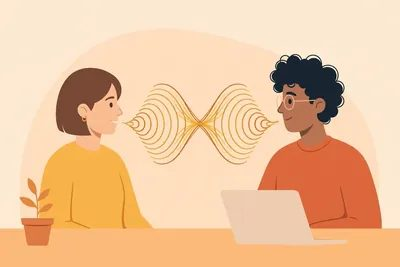
你现在用的语音助手大多走三段接力：先把你的话转成文字，文字模型想好回答，再用语音合成念出来。Block 在 10 月 23 日发布的 Dessa 把中间这段省了：声音进、声音出，不经过文字，也就没有转…
你现在用的语音助手大多走三段接力：先把你的话转成文字，文字模型想好回答，再用语音合成念出来。Block 在 10 月 23 日发布的 Dessa 把中间这段省了：声音进、声音出，不经过文字，也就没有转文字那一步。
Dessa 叫全双工，就是边说边听。对方说话时它能插话、应一声“嗯”“对”，能听出语气、笑声和停顿，Block 的说法是，文字管线会把这些情绪信息丢掉，Dessa 从真实对话录音里学来，所以听起来更像人在聊天。训练也走了一条少见的路：Block 说 Dessa 从零开始，只用人类的对话录音训练，没用文本、没用现成模型，训练只用了一台英伟达 GB200 机架。推理端更轻：Block 说它在 M4 Max 的 MacBook Pro 上本地跑，速度快于实时。
先把现状讲清，免得你去找下载链接扑空。Dessa 现在是研究预览，挂着候补名单，早期名额先给一小批 AI 安全研究员。Block 没公布参数量、API、价格、权重和评测成绩，目前能看到的证据只有它自己放出的演示对话，演示里也有偶尔听错名字的小毛病。
普通人怎么用：做客服、口播、陪聊产品的人，先去听 Block 放出的演示，重点听打断和应声自然不自然，再判断全双工值不值得等。普通用户不用急着排队，等它开放、价格和评测都出来再试不迟。
多数医疗 AI 的做法是一次性看完所有资料再给答案：症状、化验、影像全摊开，一次出诊断。微软研究团队换了一个做法，登在《科学》杂志上的研究里叫诊断编排器：模型先模拟一群临床专家协作，决定先问病人什么病…
多数医疗 AI 的做法是一次性看完所有资料再给答案：症状、化验、影像全摊开，一次出诊断。微软研究团队换了一个做法，登在《科学》杂志上的研究里叫诊断编排器：模型先模拟一群临床专家协作，决定先问病人什么病史、体格检查看什么，再根据回答决定开哪些检查，看完结果再决定下一步，边查边更新自己的判断。
路透社 10 月 25 日报道了这项研究的结果。研究团队出了 300 多道特别疑难、容易混淆的病例，编排器在完成问诊和定诊断上，准确率比用教科书和联网资料的普通医生高两倍多。在一个大型急诊入院数据库的病例上，它也胜过医生。研究者还说，编排器设计的检查方案花钱更少，衡量的不只是答对没有，还有检查开得节不节制。
下一步已经排好：研究团队要和波士顿的贝斯以色列女执事医疗中心合作，先在急诊候诊分诊上测试这套工具。
普通人怎么用：这不是一个能拿来自诊的工具，别把症状输进去当诊断用。能学的是它问诊的顺序：去看病之前，把症状出现的时间、变化、已经做过的检查按顺序写清楚，医生问起来不用现想，问诊效率和准确率都高一截。
月之暗面在 10 月 23 日发布 Kimi K3.1 Pro。它不是全新底座，而是 7 月发布的 Kimi K3 继续训练出来的版本：总参数 2.8 万亿，每次实际激活 1040 亿，上下文保持 1…
月之暗面在 10 月 23 日发布 Kimi K3.1 Pro。它不是全新底座，而是 7 月发布的 Kimi K3 继续训练出来的版本：总参数 2.8 万亿，每次实际激活 1040 亿，上下文保持 100 万 tokens，一次能吞下几十万字的资料再回答。
成绩单分两部分看。月之暗面自己的测试里，K3.1 Pro 在 Terminal-Bench 4.0 上拿到 65.7%，排在 Claude Opus 5.5 的 66.4% 之后、GPT-6 Astra 的 58.2% 之前。独立榜单 Artificial Analysis 的智能指数给它 55 分，排第四，只比榜首 Opus 5.5 的 58 分低 3 分。厂商自测和独立榜单的口径不同，两边都只能当参考。
价格和上线方式很实在。API 定价是输入每百万 tokens 2 美元、输出 10 美元，月之暗面说比上一代便宜三分之一；还有一个 Highspeed 版本，月之暗面说速度能快 2 到 3 倍。模型已经能在 Kimi.ai、Kimi Code 和 API 里用，完整权重承诺在 11 月 4 日之前放出，到时候才是真正能自己部署的开源版本。
这次发布还有一个少见的动作：月之暗面主动从训练数据和训练环境里删掉了网络攻击相关内容，宁可牺牲一部分网络安全攻防能力，也不放出一个现成的攻击工具。普通人怎么用：现在就可以去 Kimi.ai 免费试它的长文档问答和 3D 建模，做代码项目的可以拿一个真实小项目跟 Claude 对比测一轮；想自己部署的，等 11 月 4 日权重放出再动手。
英伟达在 10 月 23 日发布 Nemotron 3.5 Bolt E4B 4GB。名字里的 4GB 就是它的卖点：跑起来大约只占 4GB 显存，一块几年前的游戏显卡、或者一块 8GB 的 Jets…
英伟达在 10 月 23 日发布 Nemotron 3.5 Bolt E4B 4GB。名字里的 4GB 就是它的卖点：跑起来大约只占 4GB 显存，一块几年前的游戏显卡、或者一块 8GB 的 Jetson Orin Nano 开发板就能带动。
模型底子是谷歌的 Gemma 4 E4B，英伟达在上面加了自己的训练：总参数 80 亿，实际生效 40 亿，上下文 6.4 万 tokens，支持 35 种语言。它会聊天，也会在一轮轮对话里调用工具办事，还能在简短语音回复和深度思考两种模式之间切换。发布演示里，一台 8GB 的 Jetson Orin Nano 带动 Reachy Mini 小机器人，一边聊天一边转头，全程没有联网跑云端。
获取门槛也不高。权重在 Hugging Face 免费下载，用 OpenMDW-1.1 协议，允许商用，量化文件 6.18GB，装 Ollama 或 llama.cpp 就能跑，显存准备 4 到 5GB 就够。这个体积适合三类场景：家里常开的语音助手、游戏里会接话的角色、店面或机器人上的本地客服，数据不出设备，断网也能用。
小模型也有边界。英伟达自己的对比里，它在多轮挑战上赢了同体积的 Gemma 4 E4B，但翻译和复杂工具调用上弱于 Qwen3.5 4B。普通人怎么用：先在旧显卡上用 Ollama 跑起来，测语音助手和文档问答这两类任务；写代码、做复杂推理这类重活，还是交给云端大模型，小模型只负责它跑得动的部分。
10 月 22 日，科大讯飞在 1024 开发者节上发布星火 X2.6。这次发布会最抓眼球的不是参数，而是训练底座：讯飞说，这是业内唯一全程用国产算力训练的大模型。
10 月 22 日，科大讯飞在 1024 开发者节上发布星火 X2.6。这次发布会最抓眼球的不是参数，而是训练底座：讯飞说，这是业内唯一全程用国产算力训练的大模型。
参数先摆出来：MoE 架构，总参数 **2930 亿**，激活 **300 亿**，上下文拉到 **100 万 tokens**。一次塞进去一整本售后手册，模型能跨章节拼出退换货规则——IT 之家的现场报道里举的就是这个例子。
讯飞还公布了一组自家数据：国产芯片上的训练效率做到 4 倍，推理效率 4.5 倍；端侧能独立完成的任务占比从 12.8% 涨到 **40% 以上**。这些都是厂商口径，听个方向就行。
对普通开发者真正有用的是价格和开源。X2.6 同步开源了端侧小模型 Spark X2.6-4B；云端 API 限时 4 折后，输入 **0.9 元**/百万 tokens，输出 **3.6 元**/百万 tokens，缓存命中输入只要 0.08 元。这个价位，写代码、跑 Agent 这类高频调用场景，成本直接砍了一大截。
普通人怎么用：官网已经能免费试用。做中文 Agent、长文档问答的，可以拿它跟 DeepSeek、Qwen 对比测一轮再定技术栈；端侧 4B 开源版适合塞进手机、车机这类没网或弱网的场景。
快手可灵团队的新一代视频模型 Kling 4.0，10 月 22 日正式开放 API，先面向企业客户和开发者逐步开放。
快手可灵团队的新一代视频模型 Kling 4.0，10 月 22 日正式开放 API，先面向企业客户和开发者逐步开放。
三个硬指标值得做视频的人记住：单次原生生成最长 **30 秒**，一次生成里可以定 **10 个关键帧**做分镜级控制，还支持 Omni Reference——最多 **15 个**图片、视频、声音、人物参考一起喂进去。另外原生支持双声道立体声，口型同步更准。
30 秒意味着什么？以前的视频模型一次只能出 5–10 秒，一个完整镜头要拼好几段，人物一换段就"变脸"。30 秒一镜加关键帧控制，等于把"导演分镜"的活交给了提示词：开头什么景、中间推到哪、结尾落在哪，一次写清楚。
怎么用得上：个人创作者现在就能在 SelfyzAI 这类首批接入的平台里选到 Kling 4.0（按积分扣费）；有开发能力的团队可以直接调 API。做口播、产品演示、剧情短片的，可以拿一条旧脚本重跑一遍，对比下和 Seedance 一代的成片差异再决定主力管线。
普通人怎么用：没技术背景就去 SelfyzAI 的工作台，模型选择器里切到 Kling 4.0，把原来分三段拼的镜头改成一段 30 秒直出，先看人物一致性有没有肉眼可见的提升，再决定要不要换管线。
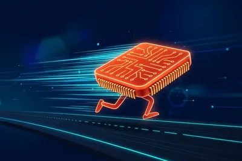
10 月 20 日，AI 模型竞技场 Arena 更新榜单：DeepSeek-V4.1-Flash-20261017（大家叫它 1017）在 Agent Arena 拿下开源模型第一、总榜第 11。前…
10 月 20 日，AI 模型竞技场 Arena 更新榜单：DeepSeek-V4.1-Flash-20261017（大家叫它 1017）在 Agent Arena 拿下开源模型第一、总榜第 11。前一天，它刚在 Code Arena 的 WebDev（代码/前端榜）拿过开源第一、总榜约第 12。两天两冠，开源榜的头把交椅又回到了 DeepSeek 手里。
这个榜有意思的地方在于，它不考卷子。Agent Arena 的成绩来自约 7500 次真实使用会话：活儿干没干成、用户买不买账，直接决定排名。1017 相对平均模型综合净改善约 5.1%，单任务成本中位数约 0.20 美元，折合人民币一块二。任务成功确认、用户正负反馈、Bash 命令执行可靠性、可引导性四个细分项，1017 全是开源第一，其中"任务成功确认"单拎出来排总榜第 8——只看"把活干成"这一个维度，它只输给 7 个闭源模型。
账本另一半是价格：1017 的成本大约只有 Kimi K3 的 1/10。10 月 17 日发布当天，网页、App、API 同步切换，官方只说"能力升级，价格不变"，模型权重照常放到 Hugging Face 和 ModelScope 上，想自己部署的人免费拿走。
泼一盆冷水：总榜前 10 名全是闭源模型，Claude Opus、GPT-6 系列还在前面。开源和顶尖闭源的差距在收窄，不是抹平了。
普通人怎么用：你用 API 跑 Agent、批量处理任务、写代码，1017 是现在性价比最高的开源选择；只在网页端聊天的用户，直接用 DeepSeek 官方 App 就行，花小钱办接近贵价模型的事。
MiniMax 在 10 月 19 日发布了 M3.1 Flash，定位很明确：不追基准极限，专治 Agent 任务的成本和速度。官方说法：Agent 任务整体使用成本比前代低 70%，在线推理速度快…
MiniMax 在 10 月 19 日发布了 M3.1 Flash，定位很明确：不追基准极限，专治 Agent 任务的成本和速度。官方说法：Agent 任务整体使用成本比前代低 70%，在线推理速度快近 3 倍。
账算得细。API 定价每百万 token：输入 0.15 美元、输出 0.60 美元、缓存输入 0.015 美元。官方称日常输出超 200 tokens/秒，中位数 170 以上，上下文拉到 100 万 token。多轮工具调用的长任务，用它跑确实便宜。发布当天 OpenRouter、Vercel AI Gateway 就同步上架了（含免费路由），模型权重拟在 10 月 23 日释出。还有个彩蛋：早前在平台上匿名霸榜、累计跑了 200 万亿 token 的"Space Bunny"，官方认领了，就是这款模型的早期版本。
但独立测试泼了盆冷水。Artificial Analysis 测出 Intelligence Index 42 分，比上代 M3 的 29 分进步不小，单任务成本从约 0.51 美元降到 0.22 美元。可同一机构的 AA-Omniscience 基准里，它答对 56% 的知识问题，答错时几乎从不认怂，直接给错答案——按该基准口径，幻觉率高达 93%。
普通人怎么用：写代码、跑 Agent 的开发者，现在就去 OpenRouter 免费路由试一把，白嫖窗口期。凡是财务分析、合规文档、自动更新记录这类知识密集型流程，先别裸上，幻觉率高就意味着必须配检索和人工核验。省的钱，一部分得花在验证上。
10 月 20 日，DeepSeek 把内部推理框架 DeepInfer 全面开源，Apache 2.0 协议。之前他们陆续放出过 FlashMLA、DeepGEMM、DeepEP 算子库，这次是把零…
10 月 20 日，DeepSeek 把内部推理框架 DeepInfer 全面开源，Apache 2.0 协议。之前他们陆续放出过 FlashMLA、DeepGEMM、DeepEP 算子库，这次是把零散部件组装成了一整套工程框架。
推理框架是什么？如果把大模型比作名厨，它就是餐厅的后厨调度系统：成千上万个请求同时进来，先处理谁、任务怎么分、多张芯片怎么配合，全归它管。它的效率直接决定 AI 服务的响应速度、吞吐和单位调用成本。
数据很硬。DeepInfer 已支撑 DeepSeek V4.1 Flash 的大规模在线服务，单个集群一天处理 155 万亿 tokens。128K 长上下文场景下，预填充吞吐约 29K tokens/秒/卡；解码阶段在每用户 80 tokens/秒的交互速度下，单卡约 2200 tokens/秒。同时兼容英伟达 SM100 和华为昇腾 950 双平台。配套还开源了 deepseek-recipe：生产级 Token 编解码组件，和官方 API 逻辑对齐。
但边界也写明了：当前版本只提供离线推理，缺 KV 缓存管理、输入生成分离、跨副本负载均衡，拿回去还不是开箱即用的完整在线服务。想私有化部署的团队，这是前人趟好的路；普通人用不上，也不需要懂。
普通人怎么用：这条对你我最实在的启示是——推理成本还在往下走，API 和 AI 应用只会更便宜。继续薅 DeepSeek 的低价额度就行，基础设施的便宜迟早落到你的账单上。
10 月 19 日，美国初创公司 Inception 发布 Mercury 3。它的路子很野：不用传统的"一个字一个字吐"，而是扩散架构，一次并行生成多个词。结果是模型比上一代大了 40 多倍，速度一…
10 月 19 日，美国初创公司 Inception 发布 Mercury 3。它的路子很野：不用传统的"一个字一个字吐"，而是扩散架构，一次并行生成多个词。结果是模型比上一代大了 40 多倍，速度一点没掉，每秒输出 **1000+ token**——在普通 NVIDIA 显卡上就能跑到这个数。
性能也够看：官方把它跟 GPT-6 Luna、Claude Haiku 5.5 放在多项基准里对打，宣称不输。上下文窗口从 26 万拉到 **100 万 token**，已经在浏览器 Agent、实时搜索、客服、在线教育里跑起来了。
价格很实在：标价输入 $0.20、输出 $0.70 每百万 token，发布价直接五折，输入 **$0.10**、输出 **$0.35**，缓存 token 再按输入价的 1 折算。接口兼容 OpenAI 格式，开发者换几行代码就行，已上 OpenRouter 和 Vercel AI Gateway。
普通人怎么用：你不需要搞懂扩散模型。结论只有一条——模型市场在拼"更快更便宜"，你以后用的 AI 助手、AI 搜索会越来越快、越来越不贵。跑 Agent、做应用的人现在可以捡便宜：同样预算，能跑更多轮。
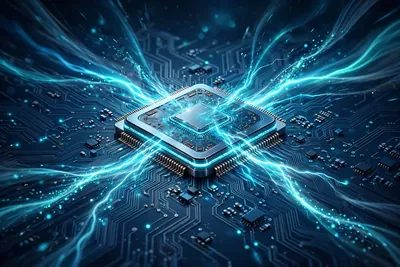
10 月 17 日下午，DeepSeek 在 X 上连发几条帖子，推出了 DeepSeek-V4.1-Flash-1017。名字里的 1017 就是发布日期。这次官方的说法很直接：性能、速度、输出长度…
10 月 17 日下午，DeepSeek 在 X 上连发几条帖子，推出了 DeepSeek-V4.1-Flash-1017。名字里的 1017 就是发布日期。这次官方的说法很直接：性能、速度、输出长度三项全是"帕累托改进"——变强了，价格一分没涨。
数字先摆出来。代码测试 DeepSWE v1.1 上，新模型拿了 77.0%，上一版是 74.2%，Anthropic 的 Claude Opus 5 是 74.0%。编程竞赛评分 Codeforces 上，新版 3471 分，超过上一代旗舰 V4-Pro 的 3348 分。API 价格没动，走原来的 deepseek-flash 接口就行。
跑分之外，真正有信息量的是官方点名的适配：新模型"为 DeepSeek Harness、腾讯 CodeBuddy、WorkBuddy 做过优化"，并提醒用户把 Harness 升到 v0.2.1-rc.1 以上。Harness 是 DeepSeek 自家 8 月开源的智能体框架（命令行叫 dsh），8 天拿下近 20 万 GitHub 星。模型和自家工具链绑在一起推，DeepSeek 要的不是只卖权重，是整套开发栈。
另外两个省钱细节：输出变短了——按量计费的 API 时代，同样答案用更少的词就是更便宜，官方称单任务成本常在 0.2–0.25 美元，而竞品是 2–10 美元；搜索和抓取 API（每个端点每千次调用 0.75 美元）在 Harness、Claude Code、Codex 里经服务端调用，10 月 31 日 16:00（UTC）之前免费。
避坑点：DeepSeek 这周刚经历过一次约 5 小时的宕机，算力吃紧是公开的秘密，生产环境用它得多做一层重试。
普通人怎么用：不用 API 的人直接去官网和 App 体验，免费；用 API 的人，10 月底前把 Harness 升级、薅完免费的搜索额度再说。
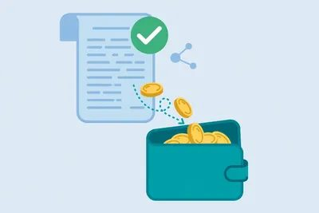
据 @op7418 分享，DeepSeek 对 10 月 15 日的 API 故障做了赠金补偿：过去 7 天的 API 消耗里，故障时段（北京时间 10 月 15 日 8:11–13:04）相关的部分…
据 @op7418 分享，DeepSeek 对 10 月 15 日的 API 故障做了赠金补偿：过去 7 天的 API 消耗里，故障时段（北京时间 10 月 15 日 8:11–13:04）相关的部分退还赠金。
故障持续了约 5 小时，正好卡在工作日上午。做 AI 应用的人最怕这个：接口一挂，自己的服务跟着挂，用户还以为是你的问题。有补偿总比没有强，至少对得起付过费的开发者。
这类补偿一般是自动到账，不用申请。普通人怎么用：如果你或你的团队在用 DeepSeek API，去控制台查一下账单，看赠金是否到账。顺手做一件事：给关键业务加个备用模型切换——主接口挂掉时自动切到备用，5 小时的故障就不会变成 5 小时的停服。
Meta 10 月 15 日发布了 Muse Spark Open，自称"美国迄今最强的开源权重模型"。参数量 8160 亿（MoE 架构，每次只激活 420 亿），上下文 100 万 token，主…
Meta 10 月 15 日发布了 Muse Spark Open，自称"美国迄今最强的开源权重模型"。参数量 8160 亿（MoE 架构，每次只激活 420 亿），上下文 100 万 token，主攻写代码和智能体任务：长任务、多步推理、软件工程是它的强项。
最抓眼球的是部署方式。Meta 和苹果合作，把模型调到了 Mac Studio 上跑：两台 512GB 的 M5 Ultra Mac Studio，靠 MLX 框架连成一台"1TB 统一内存的超级计算机"，桌面上就能跑 8160 亿参数的模型。扎克伯格还专门感谢了苹果 CEO John Ternus。泼点冷水：512GB 版 Mac Studio 本月晚些才发售，256GB 版已经卖到 1 万美元以上，这套"桌面方案"并不便宜。
普通人用不着买机器。权重免费下载，Hugging Face、Google Cloud Model Garden、Amazon SageMaker、微软 Foundry 都有；API 走 Baseten、Fireworks、Groq、Modal、Nebius、OpenRouter、Together 七家平台。许可证允许有限度的商用。
普通人怎么用：先去 OpenRouter 或 Groq 找它的 API 入口，很多平台有免费额度，先拿你的代码任务和智能体需求实测一把；有本地算力的人再去 Hugging Face 拉权重。别急着all in，先对比你现在用的模型看效果。
Black Forest Labs 10 月 15 日发布了 FLUX 3 Image Klein：56 亿参数的开源文生图+修图模型，一次能塞 10 张参考图，原生输出 4K，支持画框定位（boun…
Black Forest Labs 10 月 15 日发布了 FLUX 3 Image Klein：56 亿参数的开源文生图+修图模型，一次能塞 10 张参考图，原生输出 4K，支持画框定位（bounding box）——框住哪里改哪里，框外像素不动。
最实在的是门槛。INT8 量化版只要 8GB 显存就能跑，官方说 RTX 4070 上 9 秒出一张图，普通游戏卡直接本地用。许可证也大方：年收入低于 500 万美元的个人和公司，商用免费；超过才要付费。接法齐全：Hugging Face、GitHub、ComfyUI、Diffusers 即插即用，LoRA 微调第一天就有 Ostris AI Toolkit 和 NVIDIA NeMo 支持。不想折腾本地，BFL 官方 API 每千张图 0.009 美元。
注意这是 BFL 自己的说法：它在内部测试里拿了开源模型最高 Elo，还赢了 Ideogram V4.5 等闭源模型。厂商跑分听一半，实际效果等社区实测。
普通人怎么用：做海报、产品图、短视频封面的，先去 Hugging Face Spaces 的免费演示页试几张；效果满意再装 ComfyUI 本地跑。做独立站、小红书、带货图的个体户，年收入大概率在免费线内，等于白嫖一个顶级修图工具——改海报上某行字不用整图重画了，框住改就行。
谷歌在 10 月 13 日发布了 Gemini 4 世代的第一款旗舰模型 Gemini 4 Argon。官方定位很明确：给编程、金融、法务、网络安全、科学这些"多步骤的硬活"（deep work）准备…
谷歌在 10 月 13 日发布了 Gemini 4 世代的第一款旗舰模型 Gemini 4 Argon。官方定位很明确：给编程、金融、法务、网络安全、科学这些"多步骤的硬活"（deep work）准备的，不是聊天陪伴型。
价格是这次最实在的部分：11 月 30 日之前算导入期，输入 2 美元/百万 token、输出 10 美元/百万 token，12 月 1 日起翻倍到 4 美元和 20 美元——跟 GPT-6 Astra、Claude Opus 5.5 的正常价同档。也就是说，现在用顶级模型，别人一半的价。
跑分方面，谷歌自称在 Vals Index（测金融、代码、法务、税务综合能力的榜）上拿了 68.90% 第一，Opus 5.5 是 66.97%，GPT-6 Astra 63.13%。注意这是谷歌自己报的数，第三方还没验证。社区的真实反馈倒是不错：HN 上有人夸推理和写作有明显进步，德语和非西方文化知识被点名表扬；短板也有，图转 HTML 测试里比 Opus 5.5 和 GPT-6.1 低一档。
入口：开发者走 Gemini API 付费档，个人用户要 Google AI Pro 或 Ultra 会员（Gemini App 和搜索 AI 模式里用），代码工具 Antigravity 只有 Ultra 能用。
普通人怎么用：11 月 30 日前的半价窗口是实打实的，有批量文档处理、代码活要干的，拿这一个半月跟你现在用的模型做个对比测试，花小钱验效果，比看跑分靠谱。
10 月 13 日，NVIDIA 在 RTX Spark 笔记本开售前的软件更新里，公布了 Nemotron 3.5 Bolt 74B-A9B。定档 10 月 15 日发布。
10 月 13 日，NVIDIA 在 RTX Spark 笔记本开售前的软件更新里，公布了 Nemotron 3.5 Bolt 74B-A9B。定档 10 月 15 日发布。
它玩的是混合专家架构（MoE）：总量 740 亿参数，每次回答只激活 90 亿。再靠 2-bit 量化加量化感知训练，把体积压到 24GB。定位是"常驻笔记本的智能体模型"：写代码、调工具、后台监控任务，不经过云端，不用交 API 账单。
发布当天就能跑在 llama.cpp、vLLM、Ollama、Unsloth、LM Studio 上，也直接对接 Hermes、OpenClaw 这类智能体框架。最狠的是全开源：权重、训练数据、训练配方一次放出。
泼点冷水：2-bit 量化到底掉多少精度、真实速度如何，NVIDIA 自己没给独立实测。权重落地前一切成绩都是厂商说法，10 月 15 日之后看独立评测才算数。
普通人怎么用：手里有 24G 显存卡或打算买 RTX Spark 笔记本的人，10 月 15 日之后去 Ollama、LM Studio 拉下来试试，先从"本地写代码助手"这类任务开刀，别急着把生产任务全迁过去。
10 月 12 日，Meta 甩出今年份量最重的一次模型发布：Muse Wonder 和加强版 Muse Wonder Full。扎克伯格在 X 上放话——这把 Meta "追到了前沿"，是成立 Me…
10 月 12 日，Meta 甩出今年份量最重的一次模型发布：Muse Wonder 和加强版 Muse Wonder Full。扎克伯格在 X 上放话——这把 Meta "追到了前沿"，是成立 Meta Superintelligence Labs 一年多来第一款够资格坐上牌桌的作品。
这次 Meta 不卷问答，卷"办事"：智能体跨应用替你跑事，跨对话记得你说过什么，卡住了自己换路、重要动作前先跟你确认。演示里它能跨应用做跑步计划，也能啃保险理赔、租房合同这种又臭又长的活。
开发者现在就能调：Meta Model API 和 Muse Code，**4 美元 / 百万输入 token、20 美元 / 百万输出 token**，上下文约 **100 万 token**，加强版暂只给 Muse Code 订阅用户。
第三方 Artificial Analysis 给 Wonder Full 打了 **56 分**，排在 Claude Opus 5.5（58 分）后面。但这是 Meta 自家图里的强项对比，独立实测还没跟上，真实手感得用几周才知道。
普通人怎么用：Meta 订阅用户盯着 Muse App 的更新提示；做 AI 应用的，多了一个能记事、能跨应用干活的模型选项，拿它跟 Claude、GPT-6 对比后再定。
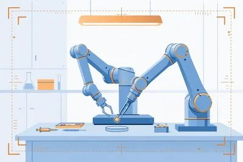
具身智能圈有个"高考"，叫 RoboDojo。港大 MMLab 牵头、全球近 20 家顶尖学术机构一起出的卷子，42 道双臂操作题，考泛化、记忆、精度这些硬骨头——换个环境还认不认识杯子，中途还记不记…
具身智能圈有个"高考"，叫 RoboDojo。港大 MMLab 牵头、全球近 20 家顶尖学术机构一起出的卷子，42 道双臂操作题，考泛化、记忆、精度这些硬骨头——换个环境还认不认识杯子，中途还记不记得拧了几个抽屉。以前这榜的第一名，是 GPT-6 Astra 跨界来拿的。
10 月 11 日，北京商报消息：第一名换成了一个中国名字——星动纪元的 VPP2（Video Prediction Policy 2）。平均成功率 **32.26%**、平均得分 **39.26**，泛化、精细操作、记忆三个单项也都是第一。GPT-6 Astra 的 22.48% 被甩开近 10 个点，Physical Intelligence 的 π0.5 只有 8.31%，英伟达 GR00T-N1.7 也在后面。
VPP2 的底气有三条：参数只有 **14B**，小模型办了大事；没加额外数据、没用 agent RSI 这类"外挂"，纯靠标准数据集；已经开源，任何人都能下载复现这个成绩。
技术路线也实在：先把"看视频预测接下来会发生什么"练强，再学"动手"，预测和动作分阶段练，不互相拖后腿。上了真机（ALOHA 双臂机器人）也照样能打：10 类没见过的操作任务，平均成功率 **58.5%**，π0.5 只有 40%，10 类里 9 类都是它第一。
普通人怎么用：做机器人、具身智能开发的，可以直接去下这个开源模型，在自己的任务上试试；不搞技术的，记住"星动纪元"这个名字——具身这条赛道，中国团队已经不只是在追了。
大模型都在比谁更会"写"，一家 20 多人的小公司反其道而行：不写一个字。
大模型都在比谁更会"写"，一家 20 多人的小公司反其道而行：不写一个字。
TypeSafe AI 10 月 9 日宣布完成 **8.7 亿美元**融资，估值 **75 亿美元**，a16z 领投，红杉跟投。距离它上一轮 4000 万美元融资，只隔了 24 天，估值翻了 37.5 倍。
它的产品叫 Jev，9 月 15 日发布，三周用户破百万。Jev 用的也是 Transformer，但它不是大语言模型——你问它问题，它不回你一段话，只回一个数字：概率、分数，或者三选一。公司管这叫"校准决策"（calibrated decisions）。
逻辑很直白：过去四年，AI 把"人话"练到了极致，但电脑之间干活不说人话。审核、风控、分类、排序这类活，要的不是一篇小作文，而是一个靠谱的判断。Jev 专门干这个，自称比 Claude 快 193 倍、成本只有几百分之一（公司自己的测试数据，听听就好）。
有意思的是，对手们已经下场抄了：OpenAI 10 月 6 日推了 Decisions API，亚马逊 10 月 1 日开源了 Strands Decider 2B，Cloudflare 也上了 Clef。赛道刚开张，巨头全员到齐。
避坑：TypeSafe 说"三分之一财富 500 强在用"，但一家客户名字都没公布，这个数字先打个问号；Jev 只回答"选 A 还是 B"这类封闭问题，写文案、做创意它干不了。
普通人怎么用：做自动化、审核、客服质检的人，可以试试决策模型这条路——亚马逊的 Strands Decider 2B 开源免费，能直接上手。思路是：让大模型负责"想"，让决策模型负责"判"，账单能薄一大截。
Reflection AI 10 月 5 日发布首个开源权重模型 Beam，**5010 亿**总参数的混合专家架构，每次只激活 230 亿参数，纯文本，主攻代码、推理和智能体任务。预训练吃了 23.…
Reflection AI 10 月 5 日发布首个开源权重模型 Beam，**5010 亿**总参数的混合专家架构，每次只激活 230 亿参数，纯文本，主攻代码、推理和智能体任务。预训练吃了 23.8 万亿 token，上下文 256K 起步、能扩到 100 万。
它的卖点不是跑分第一，而是"单位算力的智商"：官方称推理能力追平智谱 GLM-5.2，推理算力只用三分之一到四分之一。注意这是自报成绩，第三方还没验证。创始团队是两名前谷歌 DeepMind 研究员，英伟达参投，公司估值已到 **250 亿美元**，算力合同（SpaceX、Nebius）加起来超过 70 亿美元。
关键信息：权重 10 月内以 Apache 2.0 协议放出，商用、魔改、私有部署都允许，还附技术报告和微调工具包。现在只能去官网排 waitlist 尝鲜。
避坑：权重还没发布，现在下不到；8 位精度也要约 500GB 显存，个人电脑别想了，等社区量化版；生产选型别等它，先用现成的。
普通人怎么用：去 platform.reflection.ai 排个 early access；本地部署等 Ollama、llama.cpp 跟进；现在要选开源模型，直接用 Kimi K3、DeepSeek 这些现成的，Beam 来了再换也不迟。
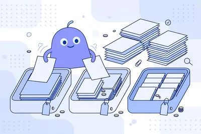
Anthropic 在 10 月 7 日上线 Claude Haiku 5.5，定位还是干重复活的小模型：做摘要、打标签、查数据库、接客服。价格砍得很狠。提示词在 10 万 token 以内时，输入每…
Anthropic 在 10 月 7 日上线 Claude Haiku 5.5，定位还是干重复活的小模型：做摘要、打标签、查数据库、接客服。价格砍得很狠。提示词在 10 万 token 以内时，输入每百万 token 收 **0.10 美元**，输出收 **0.50 美元**；超过这个长度，输入涨到 0.50 美元，输出涨到 2.50 美元。官方说，平均下来比上一代 Haiku 4.5 便宜约 **75%**。
便宜之外，能力也补上来了。上下文 100 万 token，最多输出 12.8 万 token，还首次加了 effort 档位，可选省钱或多算一会儿。Asana 试用后说延迟降了三成多，速度最高快到 2.5 倍。现在在 Claude 平台、AWS、谷歌云和微软 Azure 都能调用，模型名是 claude-haiku-5-5。Anthropic 同时把 Sonnet 5.5 缓存读取价砍半。
避坑点：新分词器会多吃一点 token，账单别按旧经验估；超过 10 万 token 后单价翻五倍，长文档先切块。
普通人怎么用：手里有批量改写、分类、提摘要这类活，先把其中一小批切到 Haiku 5.5 跑一遍，对照旧模型看对错率。质量过关再全量切换，省下的钱比换大模型实在。
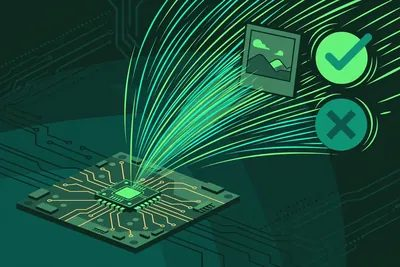
Liquid AI 在 10 月 7 日开源了 d1 家族两个模型：d1-3B 看文字加图片，d1-omni-600M 能看文字配图片或文字配语音，后者还标着实验版。这类模型不写文章，专答是非题、选择…
Liquid AI 在 10 月 7 日开源了 d1 家族两个模型：d1-3B 看文字加图片，d1-omni-600M 能看文字配图片或文字配语音，后者还标着实验版。这类模型不写文章，专答是非题、选择题和打分题，一次计算给出各选项概率。做分类、审核、路由时，用聊天模型逐字生成又慢又贵，d1 冲着这块来。
速度是它的卖点。d1-3B 在 RTX 4090 上回答一个问题要 **8 毫秒**，处理一张 384 像素图片要 17 毫秒；在 Jetson Orin Nano 这种边缘小板子上，单问也要 50 毫秒，够做摄像头逐帧判断。参数量 31.2 亿，在 12GB 显存的 RTX 3060 上也能跑，峰值显存约 6GB。权重已上 Hugging Face，支持 llama.cpp，多类设备可部署。商用许可对年入 1000 万美元以下公司免费，超了另谈。
短板：图片和语音公开跑分未放出，d1-omni-600M 也无延迟数据。别拿去做医疗、安全等高风险判断。
普通人怎么用：手里有 Jetson 或带显卡的电脑，先下 d1-3B 跑官方的实时审核或手势演示，感受一下本地判断的速度。自己的分类活再小批量试，准确率对上了再替换原来的云端调用。
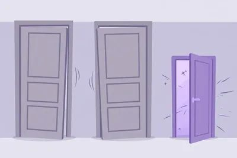
谷歌调整了 Gemini 个人账号的模型权限，10 月 9 日起生效。没有订阅的用户，以后只能用 Flash-Lite，Flash 和 Pro 不再开放。入门付费版 AI Plus 能用 Flash-…
谷歌调整了 Gemini 个人账号的模型权限，10 月 9 日起生效。没有订阅的用户，以后只能用 Flash-Lite，Flash 和 Pro 不再开放。入门付费版 AI Plus 能用 Flash-Lite 和 Flash，Pro 也会被去掉，具体时间谷歌会发邮件通知。AI Pro 和 AI Ultra 不受影响，三个模型都能继续用，还能用 Deep Think。
三个模型分工很直白：Flash-Lite 快而便宜，适合简单问答、改写和摘要；Flash 更均衡，复杂一点的整理也能扛；Pro 负责推理、写代码这类硬活。免费版没了后两者，日常查资料影响不大，拿它分析长文档、跑复杂问题就会明显吃力。谷歌同时给了每个模型低、中、高三档运算力度，选高档答得更全，额度也耗得更快，额度每 5 小时刷新，另有每周上限。
普通人怎么用：轻活继续用免费版；要做长篇分析或写代码，直接换到别的免费工具，别在 Flash-Lite 上反复追问浪费时间。已经订了 AI Plus 的，等邮件确认 Pro 下线时间再决定续不续。
法国公司 Mistral 10月6日发布新旗舰 Mistral Large 4，现在就能在 Mistral Studio 里试用，正式开放权重定在 **10月27日**。Mistral 给出的初步成绩…
法国公司 Mistral 10月6日发布新旗舰 Mistral Large 4，现在就能在 Mistral Studio 里试用，正式开放权重定在 **10月27日**。Mistral 给出的初步成绩里，长代码任务 Deep SWE 1.1 拿到 **63%**，跟智谱 GLM 5.3 大致同一档。训练约用了 4000 张芯片。权重放出来以后，企业可以把模型装进自己服务器，访问权握在自己手里。
对做产品的人，这条消息的用法很具体。请先别急着替换你正在用的模型：预览期拿你手头最典型的三个任务各跑一遍——长文档问答、改代码、表格数据处理——把答对率和耗时记下来。等 10月27日权重落地，再看显存占用和量化版本能不能塞进你现有的机器。两步都过关，再谈迁移。
避坑提醒：目前所有成绩都是 Mistral 自家口径，第三方榜单还没跟上；预览版还在边训边改，同一个问题下周再问，答案可能不一样。生产环境先别押它。
普通人怎么用：打开 Mistral Studio 免费试，把你平时问 ChatGPT 的问题原样问一遍，哪个好用用哪个，零成本多一个备选。
10 月 5 日，美国初创公司 Reflection AI 正式发布了第一款前沿开放权重模型 Beam。配置单很夸张：5010 亿总参数，实际激活 230 亿，预训练吃掉了 23.8 万亿 token…
10 月 5 日，美国初创公司 Reflection AI 正式发布了第一款前沿开放权重模型 Beam。配置单很夸张：5010 亿总参数，实际激活 230 亿，预训练吃掉了 23.8 万亿 token，上下文窗口 100 万。官方博客介绍，它是纯文本的混合专家模型，用高强度强化学习训出来，主攻推理、写代码和智能体任务。
性能说法来自 Reflection 自己的长篇博客：在高难度推理 benchmark 上，Beam 与智谱的 GLM-5.2 打平——后者 7440 亿总参数、400 亿激活——但 Beam 的推理计算量只有对手的 1/3 到 1/4。同时它的成绩超过目前主流的西方开放模型，包括 Mira Murati 团队 7 月发布的 Inkling：在两款模型都公布结果的 4 项代码测试里，Beam 全胜（不过 Inkling 是多模态，Beam 是纯文本）。
Reflection 把 Beam 定位成企业和开发者的"主力干活模型"，摆明了要跟 DeepSeek、Qwen、Mistral、Meta 抢同一批用户。公司 2024 年 3 月由两位前 Google DeepMind 研究员创立，据报道已融资 20 亿美元。
普通人怎么用：如果你靠 API 做业务——自动客服、批量内容、智能体应用——Beam 出现后又多了一个便宜选项，token 成本和延迟都可能往下走。可以等权重和 API 价格出来后，把你现有调用里最费钱的那一路拿来做个对比测试。
避坑：所有性能数字都是 Reflection 自测，**没有第三方独立验证**；它是纯文本模型，做不了图和视频；开放权重不等于开源，商用许可、微调和再分发规则要等官方公布了再动手。
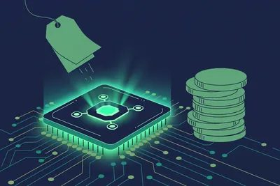
10 月 5 日，自动化工具圈在算同一笔账：OpenAI 的 GPT-6.1 Sol，API 定价每百万输入 token 2 美元、缓存输入 0.1 美元、输出 10 美元。官方定位是"接近 Astr…
10 月 5 日，自动化工具圈在算同一笔账：OpenAI 的 GPT-6.1 Sol，API 定价每百万输入 token 2 美元、缓存输入 0.1 美元、输出 10 美元。官方定位是"接近 Astra 旗舰的智能"，价格却只有旗舰 GPT-5.5（5 美元）的一半不到，更是 Claude Fable 5.1（10 美元）的零头。
它已经铺开了：API、Plus、Pro、Business、Enterprise、Edu 都能用，只不过在 ChatGPT Work 和 Codex 里，还没进普通聊天窗口。OpenAI 还预告了 GPT-6.1 Sol 版的 Dots 智能体"即将到来"。
为什么这事跟普通人有关？因为现在 AI 赚钱的玩法变了：给客户按结果收费、按月收固定服务费，成本按 token 算，中间的差价就是利润。以前用旗舰模型跑高频任务，成本吃掉大半；Sol 把"接近旗舰的推理能力"压到 2 美元，批量处理数据、自动写报告、跑客服智能体这类高频活，第一次有了可观的利润空间。Activepieces 算过一笔：5 亿 token 的处理量，用 Sol 大约 1000 美元就能拿下。
怎么用：如果你在接 AI 自动化单子，或者公司内部有批量任务，把现在调用里最烧钱、逻辑又复杂的那一路，先切到 Sol 跑一周对比效果和账单。简单分类、抽取类任务继续用 Gemini 3 Flash-Lite（0.12 美元）这类更便宜的，复杂推理再上 Sol，分层用最省。
避坑：它还没进 ChatGPT 聊天窗口，想尝鲜得走 API 或 Work/Codex；性能数字来自发布方口径，正式上生产前先小流量实测。
普通人怎么用：哪怕你不写代码，记住这个公式就行——以后找人做 AI 自动化外包，问一句"你们用的什么模型、token 成本多少"，对方报价水分大不大，一听就知道。
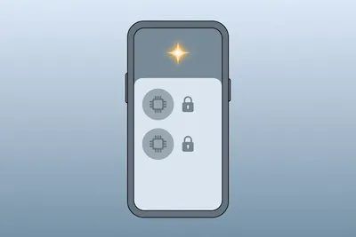
天天免费用 Gemini 的人，10 月 9 号之后手感会变。Google 发了公告：从那天起，没掏钱的免费账号只能用 **Flash-Lite** 一个模型，Flash 和 Pro 直接收回。
天天免费用 Gemini 的人，10 月 9 号之后手感会变。Google 发了公告：从那天起，没掏钱的免费账号只能用 **Flash-Lite** 一个模型，Flash 和 Pro 直接收回。
Flash-Lite 是三档里最轻的：回得快，但只够应付查资料、改改文字、做摘要这种轻活。之前免费账号能蹭到的 Flash（复杂需求）和 Pro（长文分析、编程、硬核推理）都没了。入门付费的 AI Plus 也挨了一刀：Pro 模型同样被拿掉，具体哪天生效，Google 说会发邮件单独通知。AI Pro 和 Ultra 用户不受影响，还多拿了一个 Deep Think——原来只有 99 美元和 199 美元档才有的深度推理，这次下放，等于变相逼你升级。
Google 还加了个"Effort Level"开关：低、中、高三档，调得越高模型越卖力，烧的额度也越多。5 月份它就改过一次计费：按算力扣额度，每 5 小时回血一次，另有每周上限。这次等于把"能用什么模型"也按付费等级切开了。
普通人怎么用：你如果只是拿 Gemini 当搜索引擎和改写工具，几乎没感觉；但手头要是有长文档分析、复杂方案这种重活，抓紧在 10 月 9 号前用 Pro 跑完。之后觉得 Flash-Lite 不够用了，再考虑掏钱——别急着升 Plus，它也被砍了一刀，性价比算清楚再说。
有个默认看法：AI 生成精美网页、动效，得上最贵的旗舰大模型；轻量小模型只配打杂。MiniMax 国庆前夕上线公测的 M3.1-Flash，把这看法打破了。
有个默认看法：AI 生成精美网页、动效，得上最贵的旗舰大模型；轻量小模型只配打杂。MiniMax 国庆前夕上线公测的 M3.1-Flash，把这看法打破了。
智东西 10 月 4 日的实测，直接拿它跟 Claude Opus 5.5 对打，5 组硬题：化学教学动画（约 1 分钟）、"星空列车"交互网页（可调摄影机视角，画面实时响应）、15 秒 MG 动效作品集、30 秒鸡尾酒视频、像素巫师动画（HTML+原生 JS+Canvas 2D）。
结果有来有回。Opus 5.5 在 MG 动效里火力全开：字体动效、几何变形、粒子点阵、旋转弧线、简易 3D、色彩切换，密度拉满；像素巫师那题它代码更轻量。M3.1-Flash 赢在细处：文字渲染没扭曲糊化，配色统一；鸡尾酒那题六步拆得更完整，还多送了一个带用料表、注意事项、播放控制和倍速按钮的网页。两家都翻了车：杯子和橙汁瓶的比例失调，透视没过关。
技术上 M3 走原生多模态路线，上下文 **1M**。结论：高质量前端交互，不再是旗舰模型的专利。
普通人怎么用：趁公测去 MiniMax 官网亲手试一次。不用会写代码，描述"我要一个产品介绍页，深色背景、带滚动动效"，看它做到什么程度。做自媒体、开小店、搞活动页的人，这类活以后可能不用外包了。
10 月 1 日，Cloudflare 干了件让它看起来不像 CDN 公司的事：发布了 Clef 和 Clef-flash，两个只做判断、不写字的 AI 模型，权重直接开源，Apache 2.0 协议…
10 月 1 日，Cloudflare 干了件让它看起来不像 CDN 公司的事：发布了 Clef 和 Clef-flash，两个只做判断、不写字的 AI 模型，权重直接开源，Apache 2.0 协议扔上 Hugging Face。
先解释下"决策模型"是什么。你让大模型回答"这条工单该转给哪个组"，它会一字一字生成一整句话，烧时间又烧 token，最后你还得从句子里抠答案。Clef 换了个路子：你给它场景加几个固定问题——是/否、单选、打分，它直接返回每个选项的概率，一次前向计算搞定，没有一句废话。
数字很能打。Clef 270 亿参数，底座是 Qwen3.8-27B；小杯 Clef-flash 90 亿参数。延迟中位数 Clef 209.3 毫秒，Clef-flash 38.8 毫秒，对手 Jev 是 524.1 毫秒——小杯快了 13 倍。分类 benchmark BANKING77 上，Clef macro-F1 94.20，Jev 79.74。而且 Clef 能读文本、图像、视频，Jev 只认文本。
怎么用：Workers AI 上直接调，Clef 每百万输入 token 0.24 美元，flash 版 0.09 美元，输出 token 不收费。想自己搭，权重开源免费下，接口还兼容 Jev API，老用户换个 endpoint 和模型名就能迁。
泼盆冷水：这些 benchmark 全是 Cloudflare 自测，没经过独立复现；训练数据也不公开。另外托管价其实比 Jev 贵（Jev 每百万输入 0.042 美元）——快和准是要加钱的。
普通人怎么用：做 AI 应用、Agent 的人，凡是有"分类、路由、审核、打分"环节的，把原来调大模型做判断的那一步换成 Clef-flash，又快又便宜。先去 Hugging Face 拉权重本地跑通，再决定上不上生产。
昨天（9 月 30 日），谷歌 DeepMind 发布了 Gemini 4 系列首款模型 Argon。最扎眼的就一个参数：单次输出上限从 6.4 万 token 干到 100 万。Claude Opu…
昨天（9 月 30 日），谷歌 DeepMind 发布了 Gemini 4 系列首款模型 Argon。最扎眼的就一个参数：单次输出上限从 6.4 万 token 干到 100 万。Claude Opus 5.5、GPT-6 Astra 的单次输出都是 12.8 万，Argon 直接翻了近 8 倍。
这意味着什么？以前让 AI 重构一个大仓库，得拆成几十轮对话慢慢喂；现在理论上一次就能吐完。跑分也确实能打：DeepSWE v1.1 拿下 77.9%，高于 Opus 5.5 的 74.2%；长视频理解 LVBench 91.7% 也是第一。
价格先别激动。尝鲜价输入 2 美元/百万 token、输出 10 美元/百万，缓存输入再打 0.5 折。注意这只是 introductory pricing，之后涨到输入 4 美元、输出 20 美元。打满一次 100 万输出，尝鲜价 10 美元，正式价 20 美元——长输出是烧钱功能，别当免费午餐。
还有个细节：第一批不开放给普通用户，先通过 Fairwind Program 给可信的网络安全团队。Wiz 已经拿它扫出一个医疗软件里的严重漏洞，之前几代模型都没发现。彭博则爆料部分谷歌内部员工觉得它实际写代码没跑分那么神，官方否认了——跑分看看就好。
普通人怎么用：现在还用不上，等它向 Google AI Ultra 订阅和付费 API 开放。开发者可以先去 Artificial Analysis 看它的独立评测排名再决定切不切；经常写长报告、做法务财务研报的人，重点关注这 100 万输出——这是目前唯一能"一次写完一本书"的模型。
9 月 29 日旧金山，OpenAI DevDay 一口气发了 25 个更新。开发者狂欢，普通人看晕。我挑出 4 个真正影响你我的：
9 月 29 日旧金山，OpenAI DevDay 一口气发了 25 个更新。开发者狂欢，普通人看晕。我挑出 4 个真正影响你我的：
一是 Dots——7×24 小时在线的 AI 智能体。每个 Dot 有自己的云电脑和浏览器，能接 4000 多个应用，你在 ChatGPT、Slack 里喊它一声，它替你盯着那些重复性杂事。Pro 和 Business Premium 用户先用，企业版要管理员手动开。注意默认是关闭的。
二是 GPT-6.1 Sol。上一代 Sol 才发布一周就被迭代，价格只有 Astra 的五分之一（输入 2 美元/百万 token）。写代码、跑智能体，成本直接打骨折。Plus 用户在 ChatGPT Work 和 Codex 里就能用上。
三是 Codex 上云。任务扔到云端，合上笔记本它接着干，手机上也能看进度；还附带 Security Cloud，自动扫你的 GitHub 仓库找漏洞、提修复 PR。程序员的深夜加班又少了一项。
四是 Sign in with ChatGPT。以后在 Notion、Vercel 等 16 个合作工具里登录，能直接消耗你的 ChatGPT 订阅额度，用量自己说了算，不用每个工具单独买会员。
价格刺客也有：新出的 Pro 500 档每月 500 美元，是 Plus 的 25 倍用量，主打重度用户；Ultrafast 加速档 token 输出干到 300/秒，但价格是标准 6 倍。
普通人怎么用：非程序员盯紧 Dots 和插件生态。等 Dots 稳定了，把"每周固定要办的杂事"列个清单扔给它，这是检验 AI 智能体价值最直接的办法。别急着买 Pro 500，先把 Plus 的额度用到顶再说。